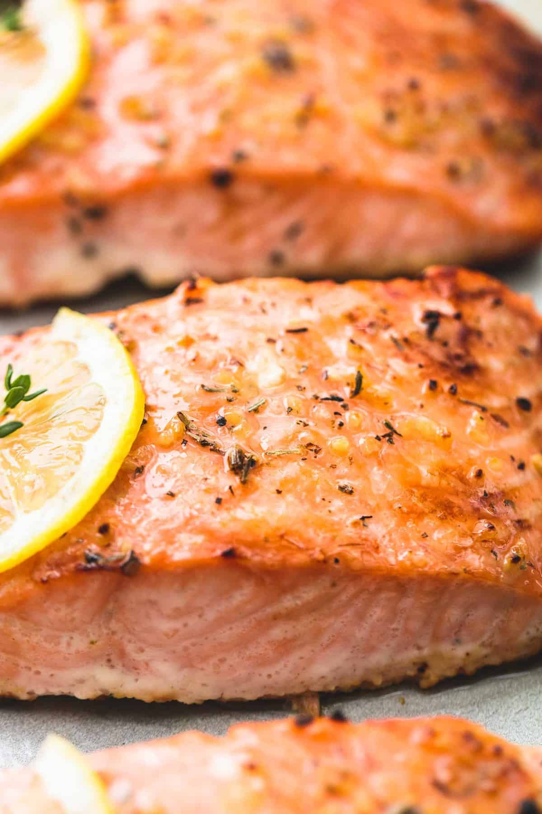

How to make the best Baked Salmon

Recipe description
The basic technique works the same no matter the recipe. You could season a piece of salmon with salt and pepper, rub it lightly with oil and stick it under the broiler just like that. Or you can coat the fish in a thin layer of a flavored mayo like I do here—in my case, the mayo is mixed with harissa chile paste, lime zest, and fresh lime juice. The mayo comes with the additional benefit of acting as an insulator, keeping the fish underneath even more tender. Plus, it's incredibly easy to whip up with plenty of flavour.
Ingredients
Serves 3-4
- 1 cup mayonnaise (235ml)
- 2 tablespoons harissa chile paste (30ml), plus more if desired
- Finely grated zest of 2 limes plus 2 teaspoons fresh lime juice (10ml)
- 11/2 teaspoon ground coriander seeds
- 2 pounds boneless center-cut salmon fillet (900g), with or without skin and either whole or divided into individual portions
- Kosher salt and freshly ground black pepper
Steps
- Preheat broiler and set oven rack to about 6 inches below broiler element. Meanwhile, in a small bowl, stir together mayonnaise, harissa, lime zest and juice, and coriander seeds. Season with salt and pepper; feel free to adjust flavor and heat level by adding more harissa, if desired.
- Line a rimmed baking sheet with aluminum foil. Lightly season salmon all over with salt and pepper. Set salmon on prepared baking sheet and rub a thin, even layer of harissa mayo all over the surface and sides.
- Broil salmon until browned on top and the center registers 115 to 125°F (46 to 52°C) for medium-rare to medium, respectively, about 5 minutes; it can help to keep the oven door cracked while salmon is cooking to prevent the broiler from cycling on and off (though not all ovens function this way). If salmon becomes well browned on top before it is cooked enough in the center, switch off the broiler and set the oven to 425°F (220°C), then continue cooking until done (this shouldn't take more than 1 to 2 minutes longer).
- Transfer salmon to plates or a platter and serve.
Home